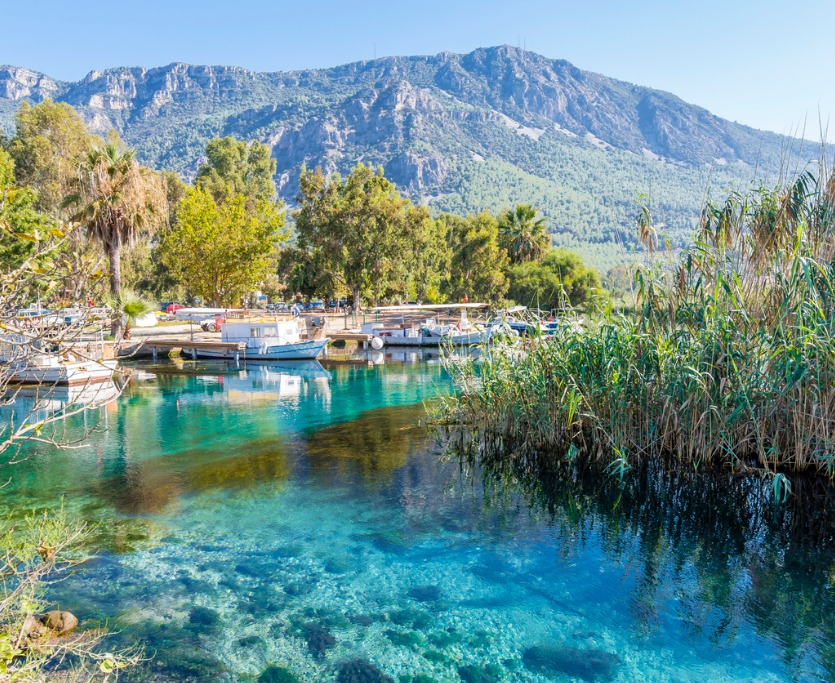

Kula ve çevresi, volkanik özellikli jeolojik yapıya sahiptir. Burgaz mevkiinde Gediz Nehri’nin üst kısmında ısı değişiklikleri, yağmur, rüzgar ve erozyon etkisiyle oluşmuş, peri bacaları görünümlü doğal oluşumlar görülür. Gediz Vadisi içinde, pastel tonlarda görkemli bir peyzaj oluşturur.
Çukurköy Şelalesi, Türkmenköy Şelaleleri ya da, Karakuzu Şelalesi gibi bir çok adı var. Şelale üç köyün oluşturduğu üçgenin tam ortasında bulunuyor. İzmir il sınırları içinde kalıyor ama Türkmenköy’e çok yakın. Şelale suları otuz metrenin üzerinde çok büyük bir kaya kütlesi üzerinden dökülüyor. Suyu temiz ve yazın azalsa da, yılın her mevsiminde akıyor. İzmir ile Manisa sınırında bulunan şelale, İzmir’in Menemen ilçesine bağlıdır.
Uşak-İzmir karayolunun 45. kilometresinde, karayolundan güneye doğru yaklaşık 500 m. kadar içeride bulunan, Gediz nehri üzerindeki tarihi köprüden sonra ulaşabilirsiniz. Taşyaran vadisi, Gediz nehrine dökülen ve kaynağını Eşme ilçesinden alan Hamam Çayının aşağı mecrası üzerinde oluşmuş bir görsel cennettir.
Uşak ilinin Karahallı ilçesinde bulunan köprü, Frigyalılar döneminde yapılmış tarihi bir yapıttır. Banaz Çayı boyunca kamp yapabileceğiniz yerler mevcuttur.
Arapapıştı Kanyonu, Kemer Barajı‘nı besleyen Akçay‘ın Aydın, Muğla ve Denizli sınırlarında kesiştiği noktada binlerce yıl içerisinde oluşmuş bir kanyondur. 6 kilometre uzunluğa ve 380 metre yükseliğe sahiptir. M.S 7. yüzyılda, Bizans hükümdarı Heraklius döneminde, Afrodisias‘ı doğu yönünden istila etmeye çalışan Arap ordularının karşısına, kale gibi dikildiği ve Arapları şaşkına çevirdiği için Arapların şaşırıp kaldığı yer anlamına gelen “Arapapıştı” ismini almıştır.
Muğla Fethiye’nin cenneti sayılan Kabak Koyu özellikle yaz ve bahar aylarında çok rağbet görüyor. Şehrin gürültüsünden uzaklaşmak,arkadaşlarınızla veya ailenizle keyifli bir tatil geçirmek için bire bir diyebiliriz.Dünyanın sayılı vadilerinden gösterilen Kabak Koyu ister ormanlık alanda ister özel kamp alanlarında çadır kurma imkanı sunuyor. Yani bu mükemmel doğanın tadını nasıl çıkartmak istediğiniz size kalmış diyebiliriz. Kabak Koyu’nun özellikle gençler tarafından tercih edildiğini de aklımızda bulunduralım. Arkadaşlarla gittiğiniz zaman eğlence ve kahkahanın eksik olmayacağının garantisi şimdiden veriliyor gibi.
Son zamanlarda bir hayli popüler olan Delikli Koy gelenleri kendine hayran bırakıyor. Alaçatı‘da ziyaretçilerini ağırlayan Delikli Koy her yıl yerli ve yabancı bir çok turisti ağırlamaktadır. Plajda kamp yao.Stresten uzak dinlenme imkanı bulabileceğiniz nadir yerlerden biri gibi görünüyor.
Datça merkeze 30 kilometre mesafede bulunan Aktur Camping, mavi ve yeşilin ahenkle dans ettiği çok özel bir alan. Kamp ve doğa meraklılarının özellikle tercih ettiği Aktur Camping, 33.500 metrekarelik bir alana yayılmış durumda. Burası ADAC (Uluslararası Kampçı Rehberi) tarafından verilen bir ödüle de sahip. Dünya kamp alanları arasında birincilik ödülü bulunan bölge, karavanla kamp yapmak isteyen gezginler açısından da geniş bir alana sahip. İçerisinde 2 adet mavi bayraklı plajı olan Aktur Camping tam teçhizatlı bir kamp için birebir.
Muğla ilinin sınırları içerisinde bulunan Akyaka, Gökova Körfezi’nin doğu ucunda yer alıyor. Körfezin bittiği yerdeki Sakartepe Dağı ile Gökova Ovası arasında kalan bölge, nefes kesen manzaralara ve doğal güzelliklere sahip. Eski bir balıkçı köyü olan bölgenin geçmişi antik çağlara kadar uzanıyor. Burası aynı zamanda Cittaslow akımına da üye. Tertemiz havası ve masmavi denizi karşısında unutulmaz anlar yaşayacağın Akyaka’da istersen rüzgar sörfü gibi ekstrem sporları da deneyebilirsiniz.
